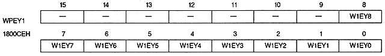

Window position bit (for horizontal coordinates) : Window start / end X bit
W0SX9 ~ W0SX0 | 1800C0H | bits 9-0 | For W0 start point coordinates |
W0EX9 to W0EX0 | 1800C4H | bit 9 ~ 0 | For W0 end point coordinates |
W1SX9 to W1SX0 | 1800C8H | bit 9 ~ 0 | For W1 start point coordinates |
W1EX9 to W1EX0 | 1800CCH | bit 9 ~ 0 | For W1 end point coordinates |
Graphic | WxxX9 | WxxX8 | WxxX7 | WxxX6 | WxxX5 | WxxX4 | WxxX3 | WxxX2 | WxxX1 | WxxX0 |
Normal | H8 | H7 | H6 | H5 | H4 | H3 | H2 | H1 | H0 | Disable |
High Resolution | H9 | H8 | H7 | H6 | H5 | H4 | H3 | H2 | H1 | H0 |
Dedicated Normal | Disable | H8 | H7 | H6 | H5 | H4 | H3 | H2 | H1 | H0 |
High Resolution | Disable | H9 | H8 | H7 | H6 | H5 | H4 | H3 | H2 | H1 |
W0SY8 ~ W0SY0 | 1800C2H | bits 8-0 | For W0 start point coordinates |
W0EY8 to W0EY0 | 1800C6H | bit 8 ~ 0 | For W0 end point coordinates |
W1SY8 to W1SY0 | 1800CAH | bit 8 ~ 0 | For W1 start point coordinates |
W1EY8 to W1EY0 | 1800CEH | bit 8 ~ 0 | For W1 end point coordinates |